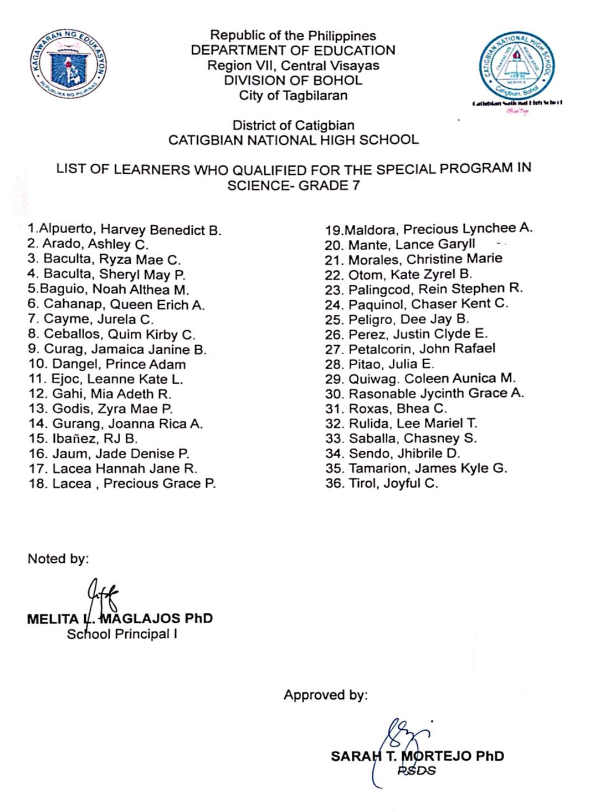
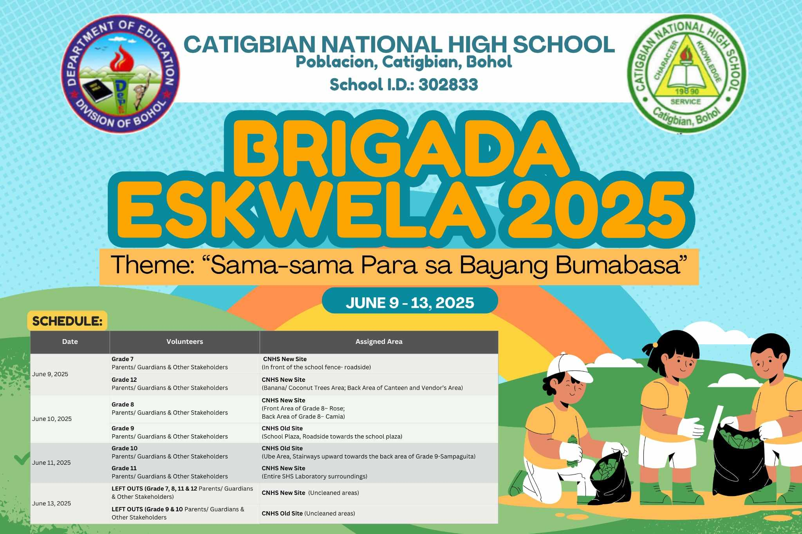

Special Program in Science Admission Results
After undergoing challenging oral and written examination, finally the screening has concluded.
The CNHS family is pleased to announce the list of successful examinees who have qualified to be part of the Grade 7 Special Program in Science for the upcoming academic year.
Your wit, guts and faith in God have really paid off and paved the way for this glory.
We encourage all learners to keep your enthusiasm for learning alive as you prepare for this enriching journey.
We look forward to welcoming you all as part of the CNHS growing family.
That's why, wee encourage the learners' parents to attend the orientation this coming Tuesday, June 17 at 2:00 p.m. at the CNHS New Site.
Congratulations once more—bright minds galore! Welcome aboard to learn and explore!
Here is the list of the successful examinees:

02393
Brigada Eskwela!
Gearing up for this school year’s opening of classes, Catigbian National High School proudly takes part in the nationwide Brigada Eskwela 2025 with the theme “Sama-sama Para sa Bayang Bumabasa.”
This annual event definitely unites parents, guardians, learners, teachers, and stakeholders as we prepare our school for a safe, clean, welcoming, and nurturing learning environment.
read more

Congratulations CNHS batch 2024-2025
Another year and another accomplishment have been unlocked!
Congratulations to Catigbian National High School for successfully ending the school year 2024-2025 with success, learning, and triumph.
As part of the year-ending activity, CNHS held its two-day affair, the Recognition Rites and Tribute to Parents, on April 13, 2025, and its Moving Up Ceremonies and Senior High School Graduation Rites on April 14, 2025, at the CNHS Covered Court.